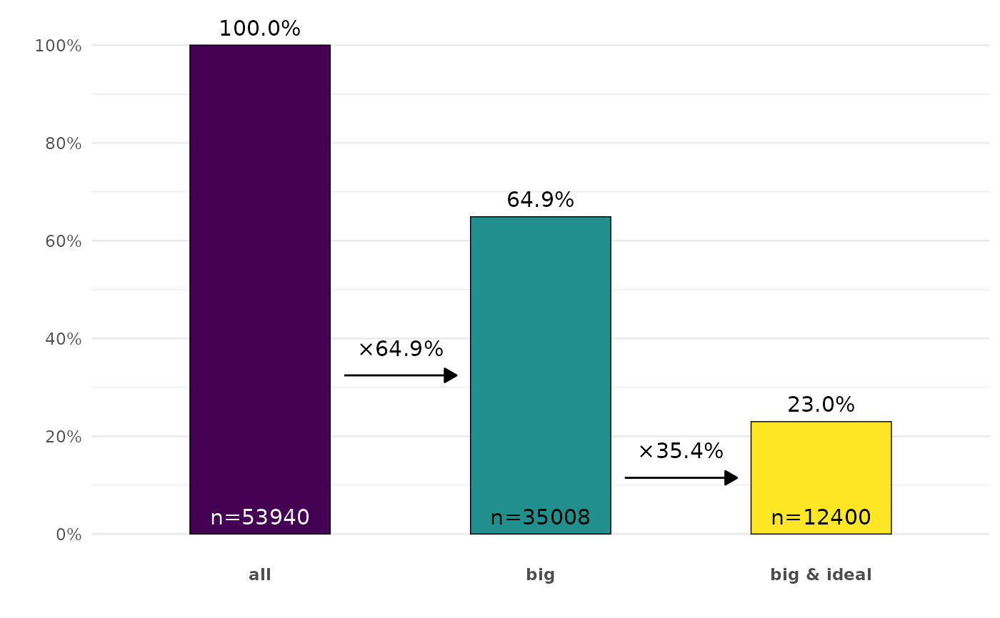
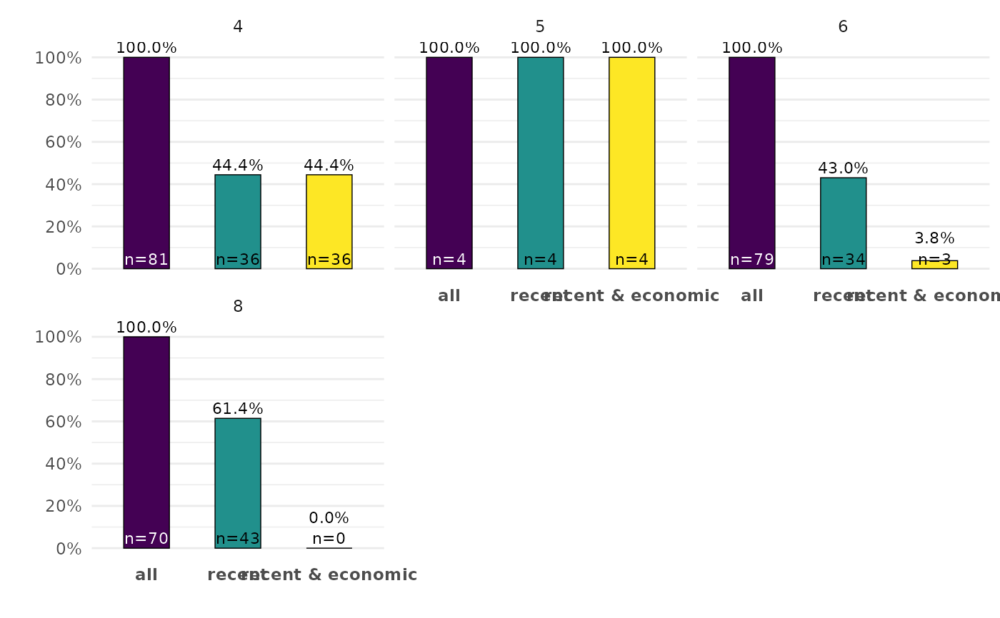
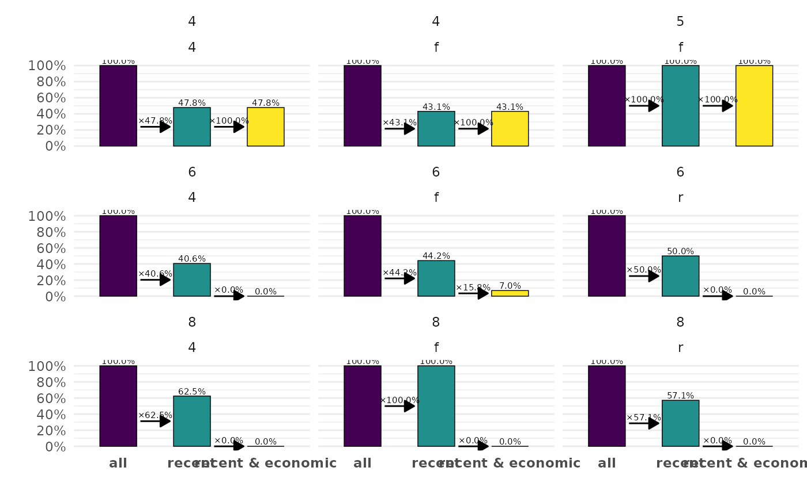

![[Experimental]](figures/lifecycle-experimental.svg)
Usage
ggcascade(
.data,
...,
.weights = NULL,
.by = NULL,
.nrow = NULL,
.ncol = NULL,
.add_n = TRUE,
.text_size = 4,
.arrows = TRUE
)
compute_cascade(.data, ..., .weights = NULL, .by = NULL)
plot_cascade(
.data,
.by = NULL,
.nrow = NULL,
.ncol = NULL,
.add_n = TRUE,
.text_size = 4,
.arrows = TRUE
)Arguments
- .data
A data frame, or data frame extension (e.g. a tibble). For
plot_cascade(), the variable displayed on the x-axis should be named"x"and the number of observations should be named"n", like the tibble returned bycompute_cascade().- ...
<
data-masking> Name-value pairs of conditions defining the different statuses to be plotted (see examples).- .weights
<
tidy-select> Optional weights. Should select only one variable.- .by
<
tidy-select> A variable or a set of variables to group by the computation of the cascade, and to generate facets. To select several variables, usedplyr::pick()(see examples).- .nrow, .ncol
Number of rows and columns, for faceted plots.
- .add_n
Display the number of observations?
- .text_size
Size of the labels, passed to
ggplot2::geom_text().- .arrows
Display arrows between statuses?
Details
ggcascade() calls compute_cascade() to generate a data set passed
to plot_cascade(). Use compute_cascade() and plot_cascade() for
more controls.
Examples
ggplot2::diamonds |>
ggcascade(
all = TRUE,
big = carat > .5,
"big & ideal" = carat > .5 & cut == "Ideal"
)

ggplot2::mpg |>
ggcascade(
all = TRUE,
recent = year > 2000,
"recent & economic" = year > 2000 & displ < 3,
.by = cyl,
.ncol = 3,
.arrows = FALSE,
.text_size = 3
)

ggplot2::mpg |>
ggcascade(
all = TRUE,
recent = year > 2000,
"recent & economic" = year > 2000 & displ < 3,
.by = pick(cyl, drv),
.add_n = FALSE,
.text_size = 2
)
